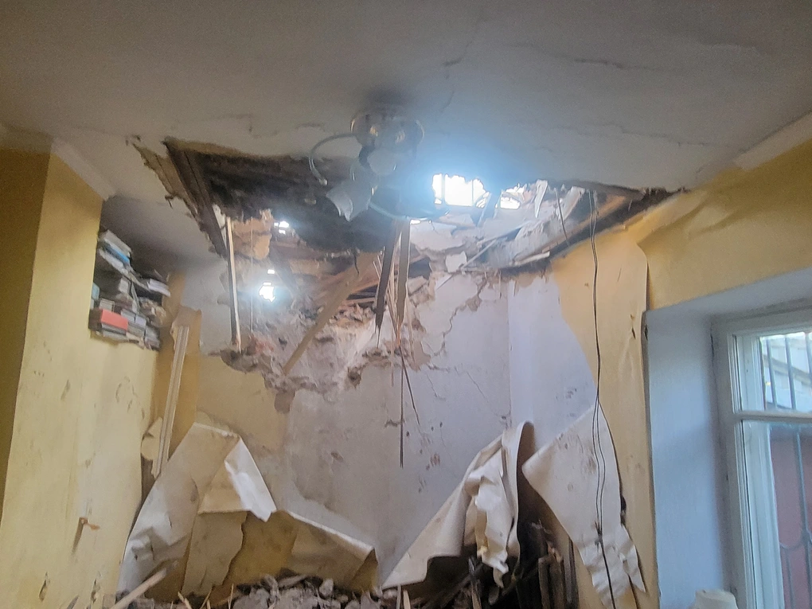

Nga tập kích thành phố cảng chiến lược, nổ lớn rung chuyển các vùng Ukraine
Thứ tư, 19/07/2023 - 12:09Nga đã tập kích thành phố cảng Odessa ở miền Nam Ukraine, trong khi nhiều vụ nổ vang lên tại các khu vực khác. Giới chức Ukraine thông báo, vào rạng sáng nay 19/7, Nga đã tiến hành cuộc không kích vào thành phố cảng Odessa ở miền Nam Ukraine trong đêm thứ hai liên tiếp. Oleh Kiper, thống đốc tỉnh Odessa, cho biết các hệ thống phòng không đã được kích hoạt nhằm đẩy lùi trận tập kích của Nga. Giới chức Odessa kêu gọi người dân tìm nơi trú ẩn. "Đừng lại gần cửa sổ. Tất cả cư dân ở tỉnh Odessa hãy tìm nơi trú ẩn!", lãnh đạo tỉnh Odessa kêu gọi.
Người phát ngôn của lực lượng phòng không Ukraine Serhiy Bratchuk thông báo, các tên lửa hành trình Kalibr đã được phóng từ Biển Đen. Theo hãng tin Tass, một loạt vụ nổ mạnh đã được nghe thấy ở thành phố Odessa từ 1h05 đến 1h07 (giờ địa phương). Ngay sau đó, các nhân chứng nói rằng những tiếng nổ lớn cũng vang lên gần cảng Chernomorsk, cách Odessa không xa. "Có thể nghe thấy rõ một số tiếng nổ lớn gần cảng Chernomorsk. Tiếng nổ mạnh đến mức chúng tôi nghĩ rằng nó sẽ đập vỡ các cửa sổ trong căn hộ của chúng tôi", một người dân địa phương cho biết. Nga tập kích thành phố cảng chiến lược, nổ lớn rung chuyển các vùng Ukraine - 2 Bản đồ Ukraine (Ảnh: BBC). Giới chức Ukraine xác nhận thành phố Odessa liên tiếp hứng chịu các cuộc không kích của Nga trong hai ngày qua. Cảnh báo không kích đã được ban bố tại Odessa và một số khu vực khác của Ukraine. Nhiều vụ nổ lớn đã được ghi nhận tại một số thành phố của Ukraine vào rạng sáng nay. Theo hãng tin TSN của Ukraine, nhiều tiếng nổ đã vang lên ở thành phố Kharkov. Hãng tin Obshchestvennoye cho biết, các vụ nổ cũng làm rung chuyển thành phố Zaporizhia vào khoảng 2h sáng nay. Các khu vực lân cận do Ukraine kiểm soát cũng xuất hiện những tiếng nổ tương tự. Thị trưởng Kiev Vitaly Klichko cho biết các vụ nổ đã được nghe thấy ở thủ đô Kiev và khu vực xung quanh Kiev vào rạng sáng nay khi lực lượng phòng không Ukraine tấn công các mục tiêu phía trên thành phố. Cảnh báo không kích cho khu vực đã được đưa ra lúc 4h41. "Những âm thanh của vụ nổ được nghe thấy ở Kiev. Lực lượng phòng không đang triển khai hoạt động", quan chức Kiev xác nhận. Các vụ tập kích diễn ra chỉ hai ngày sau khi Nga cáo buộc Ukraine dùng 2 xuồng tự sát để tấn công cầu Kerch nối đất liền Nga với bán đảo Crimea. Vụ tấn công khiến 2 người thiệt mạng, một nhịp cầu bị xệ xuống, giao thông gián đoạn. Moscow gọi đây là "hành động khủng bố" và có sự hỗ trợ của Mỹ và Anh. Truyền thông phương Tây dẫn nguồn thạo tin nói rằng, vụ tấn công là chiến dịch đặc biệt của Cơ quan An ninh và Hải quân Ukraine. Tuy nhiên, Kiev không xác nhận cũng không phủ nhận cáo buộc. Theo người phát ngôn Bộ Quốc phòng Nga Igor Konashenkov, lực lượng vũ trang Nga đã "tập kích đáp trả bằng vũ khí chính xác cao từ biển vào các khu vực, nơi được Ukraine sử dụng để lên kế hoạch dùng xuồng tự sát tấn công khủng bố Nga và xưởng sản xuất chúng gần thành phố cảng Odessa". Ngoài ra, Moscow cũng tấn công các kho chứa khoảng 70.000 tấn nhiên liệu của quân đội Ukraine ở thành phố Mykolayiv. Giới chức Ukraine hôm 18/7 cho biết Nga đã tấn công hàng loạt mục tiêu ở Ukraine sau vụ cầu Crimea bị tập kích. Ukraine đã bắn hạ tổng cộng 31 máy bay không người lái (UAV) ở vùng Odessa và Mykoliayiv, đồng thời chặn 6 tên lửa Kalibr phóng từ Biển Đen.